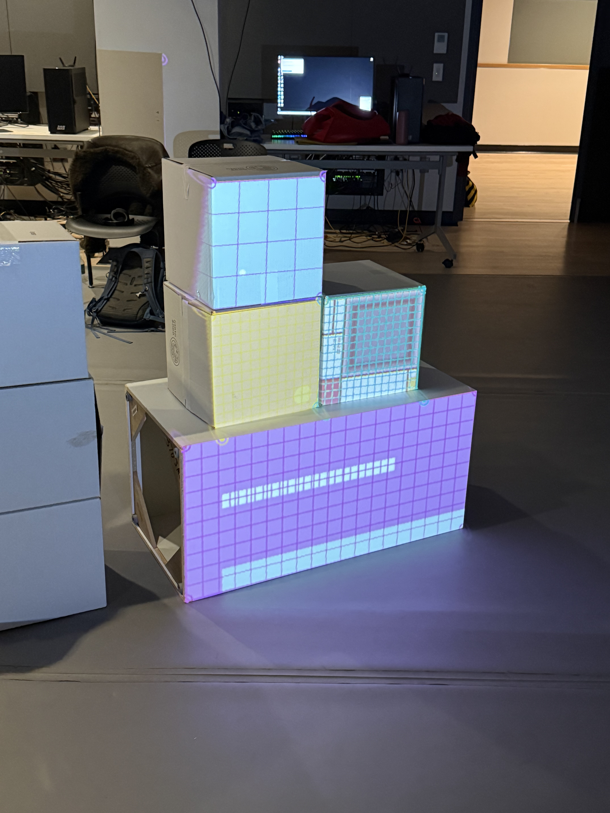
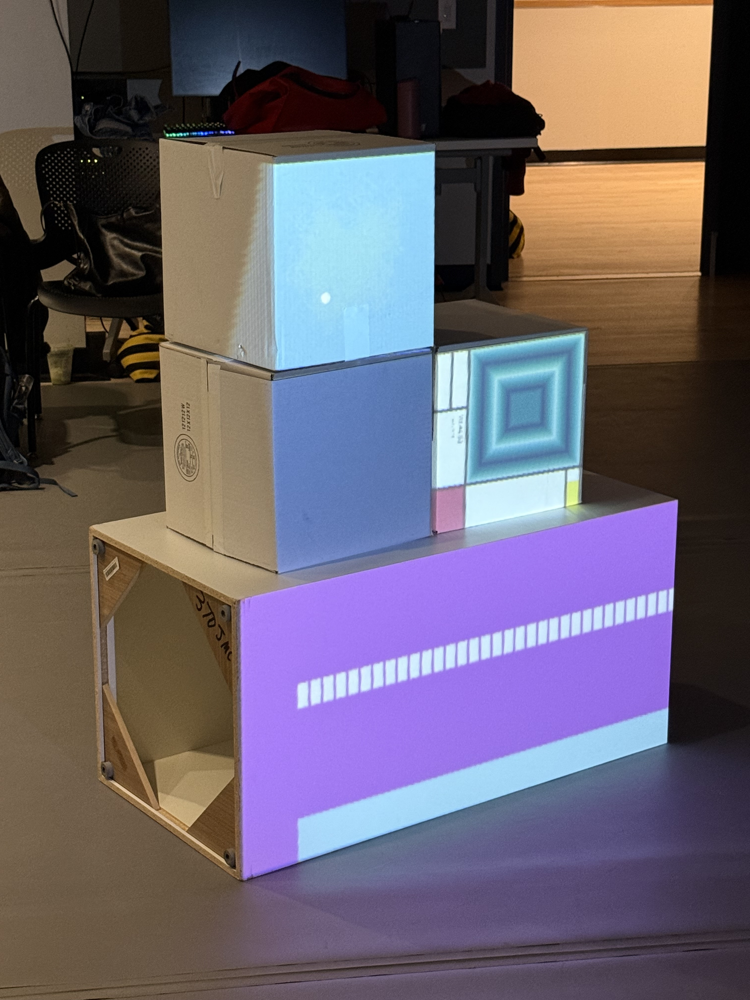
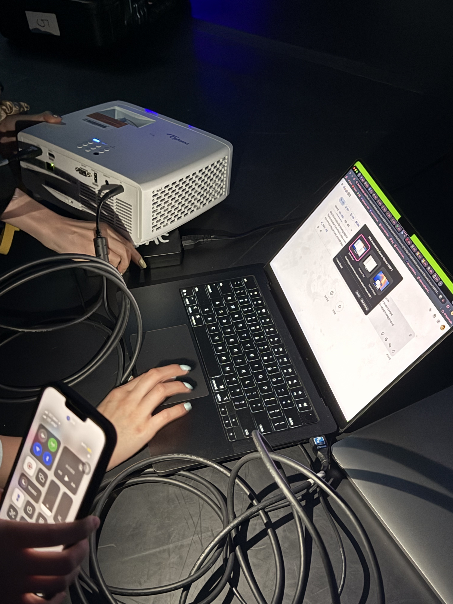
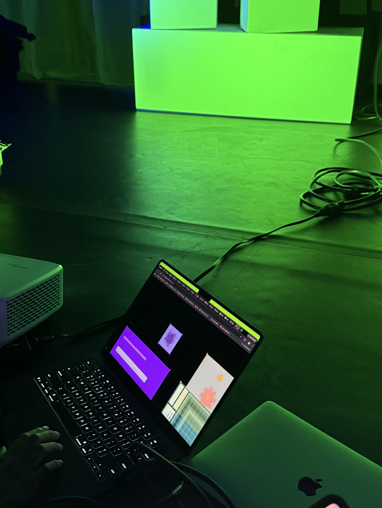
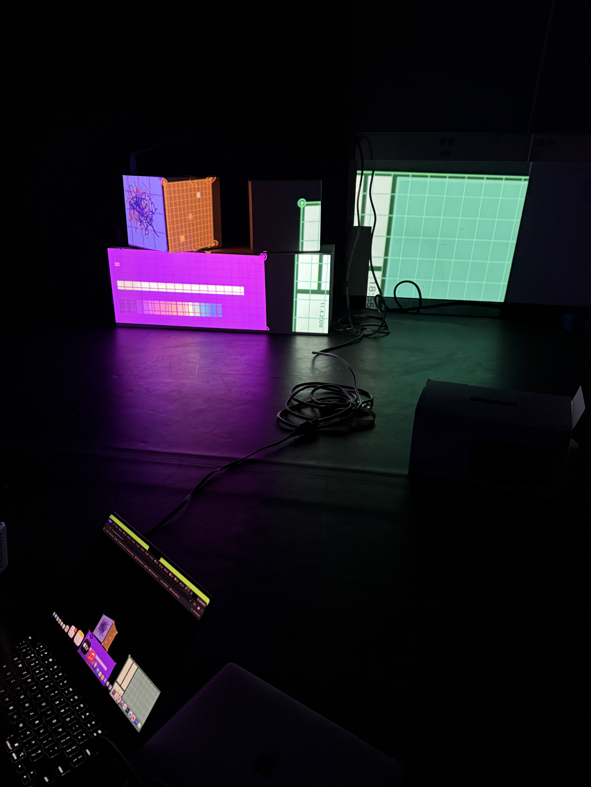
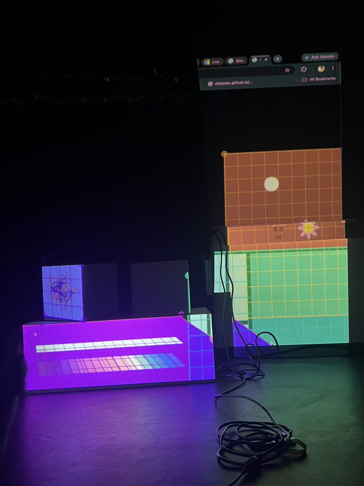
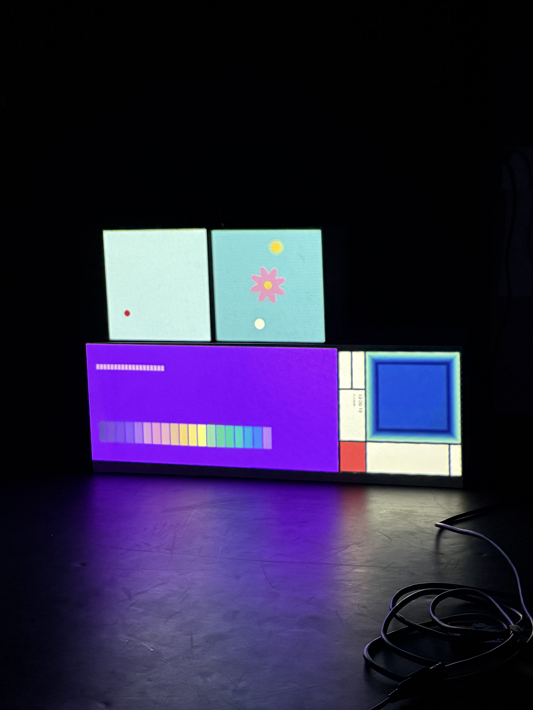
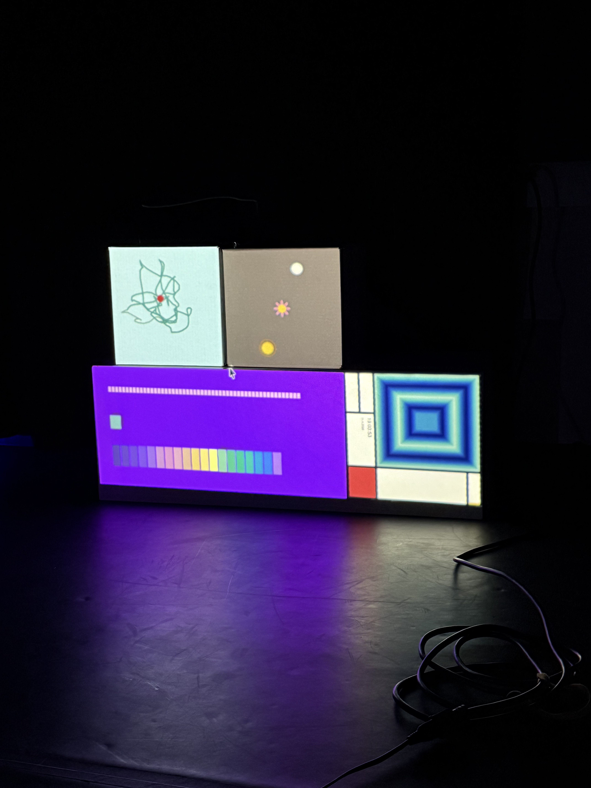
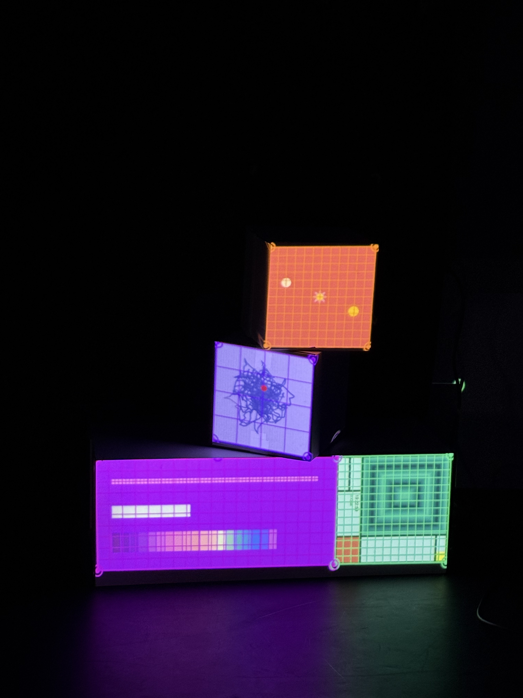
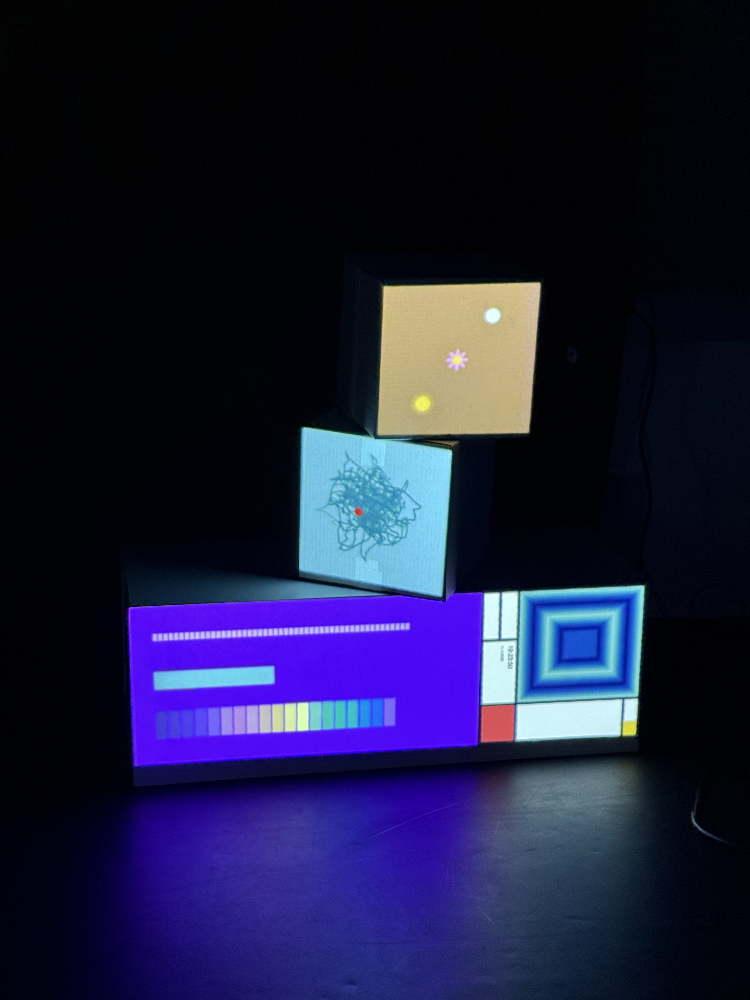

Our group had four students, one more than the other groups. We brought our own clock animations into one project and projected them onto different objects. Across the two workshops, we tried three different compositions. We used one large display stand and two or three small square boxes to build the scene.
Each animation had its own style. Mine used red, yellow, and blue shapes inspired by Mondrian. One classmate made rainbow color blocks. Another made a flower clock. In the fourth animation, a pencil drew random lines and the drawing refreshed every hour. We did not know we would work as a group when we made our original clocks, so we had not planned a shared style. Still, all four animations fit square or rectangular surfaces. They also have a geometric look. Together, they reminded me of modern art, while each person kept their own style.
Week 7 was our first time putting all four clock animations into one projection mapping file. The mapping areas in the template were small. Some were only 200 by 200 pixels. Our animations were much larger, and they all had different sizes. Some group members had to resize their work. My animation used many lines. If I changed its size, I would have to adjust many of those lines and almost remake the whole piece. I kept it at 600 by 600 pixels and planned to make its projected area smaller by hand during mapping.
With four people working on one file, combining the code was difficult. Each of us had made a clock on our own. We had to check the angle mode, color mode, and settings for drawing shapes so the animations could work together. We spent a lot of time changing RADIANS to DEGREES. We also used p5.mapper to make mapping areas for the different surfaces. Many drawing functions needed pg in front of them, such as pg.fill() and pg.rect(). When we missed one, part of the image did not display as expected.
We checked the code together and helped each other debug it. When one person learned how to make a mapping area or add pg to a drawing function, they showed the others. We also asked our teacher for advice. She helped us find problems such as the angle mode conflict. By the end of the workshop, I felt we had finished about 80 percent of the work. All four animations were in one scene, but some details still needed work. For example, the color changes in two classmates' animations did not appear as planned. It was still a good start.
Before Week 9, our group worked on the code outside class. We fixed the problems left from the first workshop. The two main changes were adjusting the RGB color settings and changing the main canvas to WEBGL mode. After that, all four animations could run together. In class, we could focus on setting up the objects, trying different compositions, and calibrating the projection.
Mapping the animations onto the objects was harder than I expected. Sometimes the projector did not cover a whole surface. The small boxes also blocked the light and made shadows on other surfaces. We moved the display stand and boxes many times. We adjusted their positions and angles, then calibrated each mapped area by hand. At first, we put two small boxes on top of the large stand. Later, we changed the arrangement to three levels. I liked the version with three levels more. The different heights made the scene feel more lively and gave the four animations more variety. In the end, we found a position with fewer shadows.
After these adjustments, we finished the project and presented it to students from other classes. I felt proud to see our four separate animations projected together onto real objects. I am also grateful to my group members for helping each other and to our teacher for her advice.
Projection mapping showed me a new way to make art. On a computer screen, my clock animation was a flat image. When we projected it onto the stand and boxes, the shapes, heights, positions, and shadows of the objects changed how it looked. Standing in front of the work felt like being inside a small art installation. This was very different from watching it on a screen, and it was one of my favorite parts.
I did not make major visual changes to my original clock animation. I did make many changes to the code so it could work with the other animations in the projection. I am happy with the final result. The presentations from other classes also made me curious about projecting onto different objects. I saw one group use mirrors and a foam mannequin head. Another group used umbrellas. If I have another chance, I would like to try objects with different shapes and materials and see how they change the same image.









